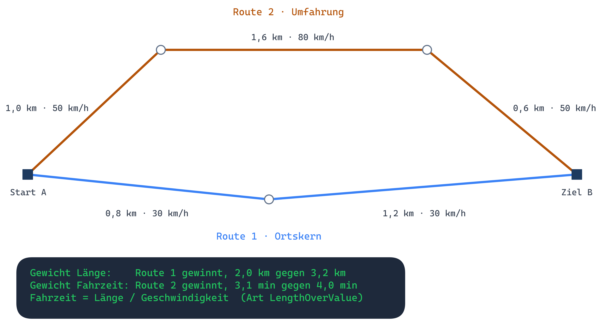

Blatt 4 · Gewichte
Was eine Kante kostet
Jede Kante hat eine Länge und beliebig viele benannte Gewichte. Eine Berechnung wählt ein Gewicht aus, und daraus ergeben sich die Kosten jeder Kante. Der kürzeste Weg nach Länge ist darum nicht unbedingt der schnellste.

Wie Gewichte gespeichert werden
Zwei Tabellen beim Host. Die erste beschreibt die Gewichte, die zweite ordnet Werte den Kanten zu.
Gewichtsdefinition
| ID | Name | Art | Ersatzwert |
|---|---|---|---|
| 1 | Länge | Länge | – |
| 2 | Fahrzeit | Länge / Wert | 30 km/h |
| 3 | Widerstand | Wert × Länge | 0.32 Ω/km |
| 4 | Fähre | Absolut | 0 |
Gewichtszuordnung
| Kante | Gewicht | Wert |
|---|---|---|
| L-210#1 | 3 | 0.21 |
| L-210#2 | 3 | 0.21 |
| STR-5 | 2 | 80 |
Die Werte stehen beim Laden direkt in der Kante, sie kommen also mit dem Shard und brauchen keine eigene Abfrage pro Kante.
Die vier Gewichtsarten
Die Art legt fest, wie aus Wert und Länge die Kosten einer Kante werden. Die Kosten eines Weges sind immer die Summe seiner Kanten.
Länge
Length · Standard350 m Kabel kosten 350. Gibt es immer, auch ohne Gewichtstabelle.
Wert × Länge
PerLengthWiderstand: 0,21 Ω/km × 0,35 km = 0,0735 Ω.
Länge / Wert
LengthOverValueFahrzeit: 1,2 km / 50 km/h = 1,44 min. Einheiten rechnet der Host passend um.
Absolut
AbsoluteFester Betrag pro Kante, unabhängig von der Länge, z. B. 15 min für eine Fähre.
Hat eine Kante für das gewählte Gewicht keinen Wert, gilt der Ersatzwert aus der Definition. Gibt es keinen, bricht die Berechnung gleich am Anfang mit einem Fehler ab, statt still mit 0 zu rechnen.
Länge
- Standard ist die Länge der Geometrie in Einheiten des Koordinatensystems. Das Netz muss deshalb in einem projizierten System gebaut werden (Meter), nicht in Grad.
- Hat das GIS eine Aufmaßlänge (z. B. „Kabel laut Aufmaß 120 m“, gezeichnet nur 100 m), nimmt der Builder diese.
- Wird eine solche Linie geteilt, wird die Aufmaßlänge anteilig verteilt: bei 40 m und 60 m Geometrie werden es 48 m und 72 m.
Richtung
Jede Kante hat eine Richtung, bezogen auf die Digitalisierrichtung (von Von nach Nach). Standard ist „beide“.
| Richtung | bedeutet | Beispiel |
|---|---|---|
| beide | in beide Richtungen passierbar | normale Leitung, Straße |
| vorwärts | nur von Von nach Nach | Einbahnstraße in Digitalisierrichtung |
| rückwärts | nur von Nach nach Von | Einbahnstraße gegen die Digitalisierrichtung |
Die gespeicherte Richtung lässt sich für eine einzelne Berechnung überschreiben, z. B. für eine Baustelle. Mehr dazu auf Blatt 5.
Was nicht vorgesehen ist
- Kombinationen mehrerer Gewichte in einer Formel
- Engpass-Rechnung (Maximum statt Summe)
- Zeitabhängige Gewichte und Abbiegeverbote